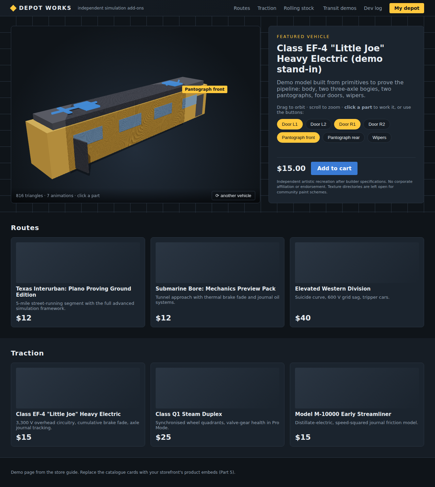
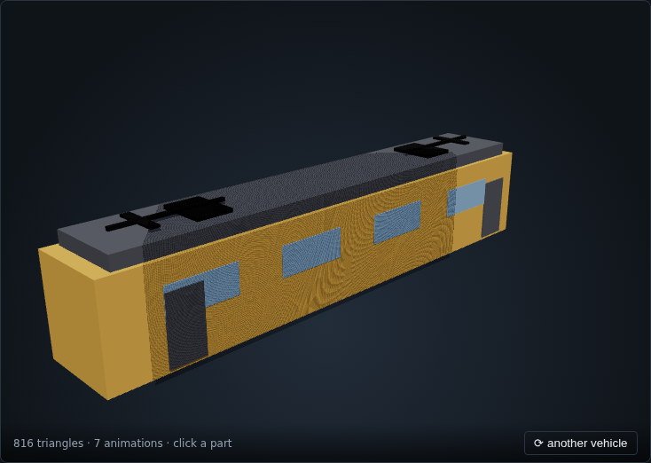
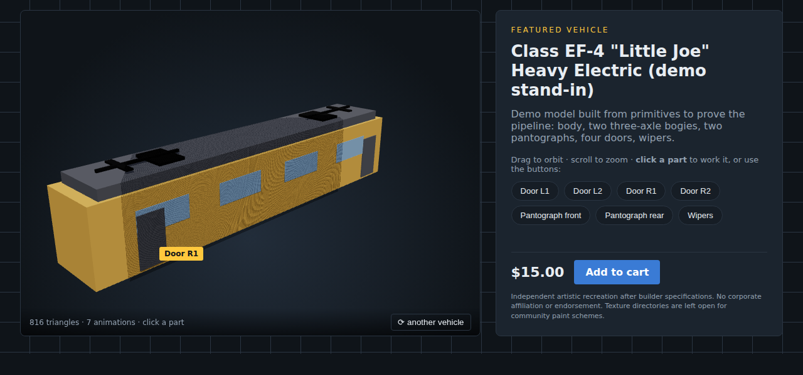
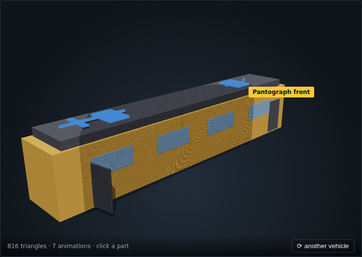

store-demo/ in a headless Chromium with WebGL, driven by the test script in
store-demo/test/drive.js (demo). No page errors were reported during the run.


web_label property you set in Blender (Part 3 §5).
web_hotspot stand-in for the thin arms) and the
left door was opened from its button. Both arms moved together because they share one animation name.The viewer is built on three.js, a free JavaScript library that is, for your purposes, a tiny Blender viewport that runs inside a web page. Every object in the script has a Blender equivalent:
| In the script | In Blender | What it does here |
|---|---|---|
WebGLRenderer | The 3D viewport (Eevee) | Draws into the <canvas> element on the page, 60 times a second. |
Scene | The scene / outliner | Holds the model, lights and the shadow ground. |
PerspectiveCamera | The viewport camera | 35° lens, like a 50 mm; aspect follows the canvas size. |
OrbitControls | Middle-mouse orbit, scroll zoom, shift-pan | Drag to orbit, wheel to zoom; limited so it never goes under the rails. |
HemisphereLight, DirectionalLight | World sky colour + a Sun lamp | Soft fill plus a shadow-casting key light. |
GLTFLoader | File ▸ Import ▸ glTF | Reads your .glb, meshes, materials, node names and animations. |
AnimationMixer / AnimationAction | The NLA editor playing one strip | One action per named clip; told to play once and hold the last frame. |
Raycaster | Left-click select in the viewport | Finds the mesh under the mouse so a click can pick a hotspot. |
Box3 | Bounding box / View Selected | Measures the model to place the camera. |
requestAnimationFrame | Play (the timeline running) | Asks the browser to draw the next frame; the loop never stops. |
models/ and add one line to the pool. Nothing in the script changes.The .glb knows node names and clip names but not which nodes are clickable, what to call them on screen, or that clicking a pantograph base should play the arms' clip. That mapping is the manifest, and the add-on writes it from the custom properties you set in Blender. The viewer stays generic; the vehicle brings its own instructions.
The first forty lines of viewer.js are the equivalent of opening a new .blend and arranging a viewport, a camera, a sun and a shadow catcher.
// the viewport: draws into the canvas, with antialiasing, a transparent background and shadows const renderer = new THREE.WebGLRenderer({ canvas, antialias: true, alpha: true }); renderer.outputColorSpace = THREE.SRGBColorSpace; // colour management: Standard view transform renderer.toneMapping = THREE.ACESFilmicToneMapping; // Filmic look renderer.shadowMap.enabled = true; const scene = new THREE.Scene(); const camera = new THREE.PerspectiveCamera(35, 1, 0.1, 500); // FOV, aspect, clip start, clip end const controls = new OrbitControls(camera, canvas); // MMB orbit / wheel zoom controls.maxPolarAngle = Math.PI * 0.49; // never look up from under the rails scene.add(new THREE.HemisphereLight(0xdfe9ff, 0x303030, 1.1)); // sky / ground fill const sun = new THREE.DirectionalLight(0xffffff, 2.2); // Sun lamp sun.position.set(12, 18, 10); sun.castShadow = true; const ground = new THREE.Mesh(new THREE.CircleGeometry(60, 64), new THREE.ShadowMaterial({ opacity: 0.35 })); // shadow catcher ground.rotation.x = -Math.PI / 2; // lie flat (three.js is Y-up)
| Want to change… | Edit this |
|---|---|
| Lens / how close it feels | The first number in PerspectiveCamera(35, …): 25 is a long lens, 50 is wide. |
| Light direction or strength | sun.position.set(x, y, z) and the second argument of DirectionalLight. Remember Y is up. |
| Shadow darkness | ShadowMaterial opacity, 0 to 1. |
| Allow looking from below | Raise maxPolarAngle toward Math.PI. |
| Background | It is transparent (alpha: true), so the CSS gradient behind the canvas shows; change it in site.css under .stage. |
async function load(manifestUrl) { manifest = await (await fetch(manifestUrl)).json(); // read the small JSON first const gltf = await new GLTFLoader().loadAsync(base + manifest.model); // File ▸ Import ▸ glTF model = gltf.scene; scene.add(model); model.traverse(o => { if (o.isMesh) { o.castShadow = o.receiveShadow = true; } }); mixer = new THREE.AnimationMixer(model); // the NLA editor for this model for (const clip of gltf.animations) { // one clip per NLA track you exported const a = mixer.clipAction(clip); a.setLoop(THREE.LoopOnce, 1); // play once, not cyclic a.clampWhenFinished = true; // hold the last frame (door stays open) actions.set(clip.name, a); // look up by the strip name } for (const h of manifest.hotspots) hotspotByNode.set(h.node, h); frameModel(); buildHotspotList(); }
animations list and the viewer's actions map use. Rename a track and you must rename it in the manifest too (the add-on does both).frameModel() is Numpad . (View Selected) written out: measure the bounding box, drop the model so its lowest point sits on the shadow ground,
put the camera on a three-quarter diagonal at a distance set by the longest side, and aim the orbit at the centre.
const box = new THREE.Box3().setFromObject(model); const size = box.getSize(new THREE.Vector3()), center = box.getCenter(new THREE.Vector3()); model.position.y -= box.min.y; // rails on the ground plane const radius = Math.max(size.x, size.y, size.z); camera.position.set(center.x + radius * 0.9, center.y + radius * 0.45, center.z + radius * 0.9); controls.target.copy(center); controls.minDistance = radius * 0.3; controls.maxDistance = radius * 3; // zoom limits
Because the camera is placed from the measured size, a 10 m streetcar and a 25 m locomotive both fill the stage. To favour the front, lower the z
multiplier; the demo model's front faces −Z in glTF (that is +Y in Blender, Part 3).
function pick(ev) { const r = canvas.getBoundingClientRect(); pointer.x = ((ev.clientX - r.left) / r.width) * 2 - 1; // pixel → −1…+1 pointer.y = -((ev.clientY - r.top) / r.height) * 2 + 1; raycaster.setFromCamera(pointer, camera); for (const hit of raycaster.intersectObject(model, true)) { let o = hit.object; while (o) { if (hotspotByNode.has(o.name)) return o.name; o = o.parent; } } return null; }
Click or drag? Orbiting also starts with a mouse-down on the canvas. The viewer records where the button went down and, on release, ignores anything that moved more than six pixels: that was an orbit, not a click. Blender does the same distinction between click-select and drag-box.
function trigger(nodeName) { const h = hotspotByNode.get(nodeName); // manifest entry for this node for (const name of h.animations) { const a = actions.get(name); const forward = !playing.get(name); // closed → open, open → closed a.reset(); a.timeScale = forward ? 1 : -1; // −1 = play the strip backwards if (!forward) a.time = a.getClip().duration; // start from the last frame a.play(); playing.set(name, forward); } flash(nodeName); // brief blue emissive on the part hotspotList.querySelector(`[data-label="${h.label}"]`)?.classList.toggle('active'); }
Two small conveniences make the stage feel alive. On every mouse move the viewer runs the same pick(); if a hotspot is under the pointer, the cursor
becomes a hand and a small label (the manifest's label) is placed 12 px from the pointer (Figure 4.4). And buildHotspotList() creates
one button per distinct label in the manifest, so a visitor who cannot find the tiny wiper can still press “Wipers”. Several nodes may share a label (two
pantograph arms; the base and the arm); the first one becomes the button's target and all of them play the same clip.
The viewer exposes window.viewer.trigger('1_0128_panto01_part01'), so a sentence in your
product text can carry a link that raises the pantograph: <a href="#" onclick="viewer.trigger('…'); return false">raise the pantograph</a>.
That is the “test physics triggers in the browser” idea from the opportunity analysis, done with one line.
// index.html window.MODEL_POOL = [ "models/sample_electric.manifest.json", "models/pcc_streetcar.manifest.json", // add one line per vehicle ]; // viewer.js async function loadRandom() { await load(POOL[Math.floor(Math.random() * POOL.length)]); }
That is the whole “random model on every visit” feature. The ⟳ button calls the same function. If you prefer a daily feature instead of random, replace the
random index with new Date().getDate() % POOL.length. To open a product page with its vehicle, give the page the same viewer and a pool of one.
| Option | What you get | What you lose |
|---|---|---|
<model-viewer> (Google's web component) | One HTML tag shows a .glb with orbit, auto-rotate, AR on phones; annotation hotspots with text. | Hotspots open text, they do not play a chosen clip on click without extra script; one animation at a time. |
| Sketchfab embed | Upload the .glb, paste an iframe. Hosting and viewer are theirs; annotations and a single animation timeline. | No click-to-animate per part; their branding; your model lives on their server. |
| Turntable video / image sequence | Render in Blender, no browser 3D at all. | Nothing to click; large files for many vehicles. |
| This viewer (three.js, 225 lines) | Click any part, play any clip, reverse, labels, random pool, your look. | You host the library files; one script to keep. |
The demo viewer is recommended because it is the only one of the four that does what you asked for. The others are fine for product pages where a spin is enough.
| Symptom | Cause and fix |
|---|---|
| Blank stage, console says “Failed to resolve module specifier three” | The import map is missing or the vendor path is wrong. Check the importmap block in index.html and that vendor/three.module.js exists. |
| Blank stage when opening the file by double-click | Browsers block module scripts and fetch from file://. Use the local server (Part 5 §1). |
| Model loads, click does nothing | Node names in the manifest do not match the .glb (renamed in Blender after export, or “.001” suffix). Re-export with the add-on; it writes both. |
| “no animation named …” in the console | The NLA track name differs from the manifest's animation name, or the action was not pushed to a strip. |
| Part moves but from the wrong hinge | Origin not on the hinge in Blender; the clip rotates about the object's origin. |
| Door opens on the first click and jumps on the second | Frame 0 is not the rest pose, or the clip has keys after the last visible change. Trim the action to the motion. |
| Model black or pink | Material has no base colour / texture path broken at export. Pack textures into the .glb (Automatic image format does). |
| Model lying on its side | Exported without +Y up. Re-export; do not rotate in the viewer. |
| Slow orbit on a laptop | Over the triangle or texture budget (Part 3 §2); the status line shows triangles. |